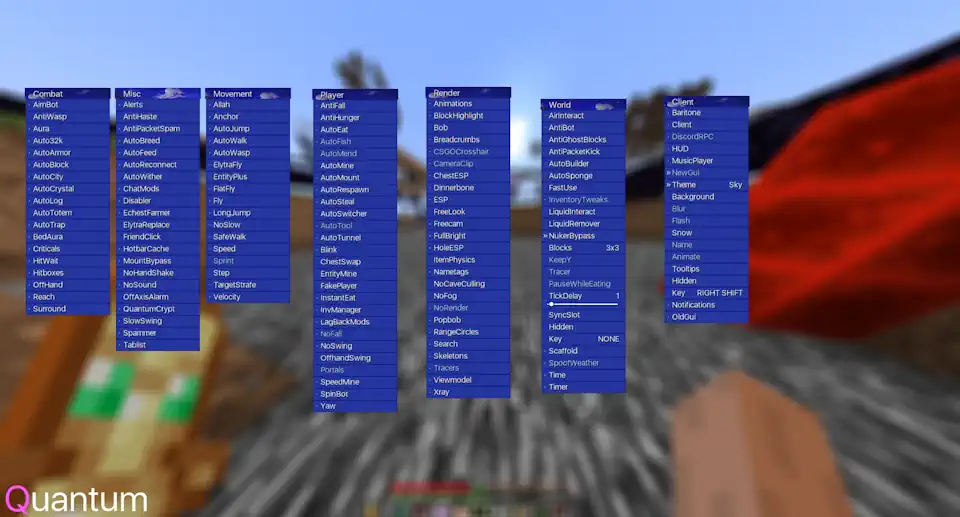
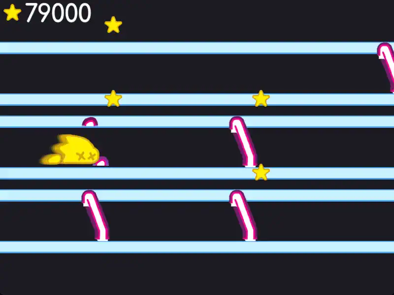
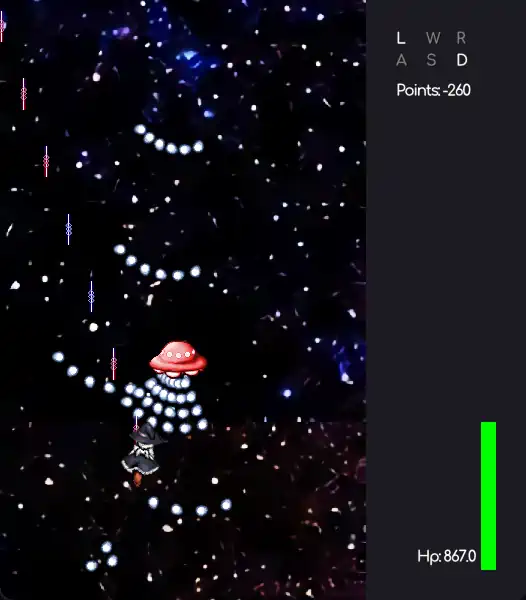
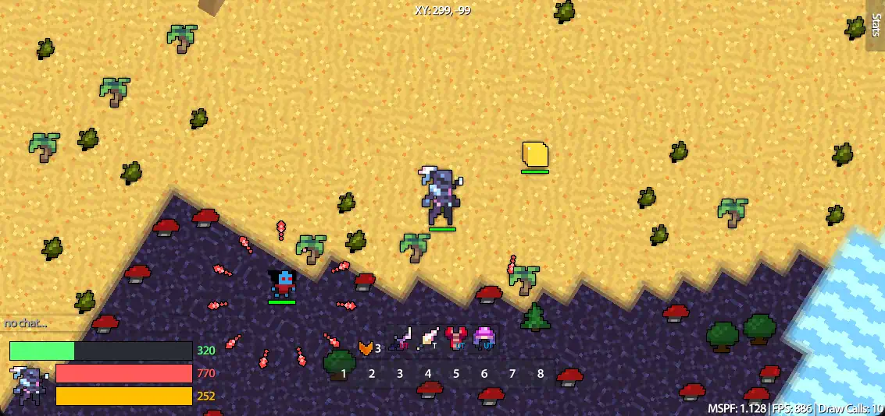
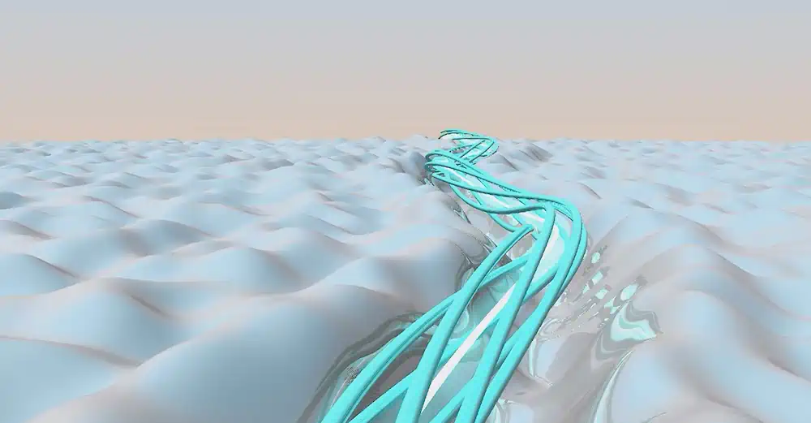
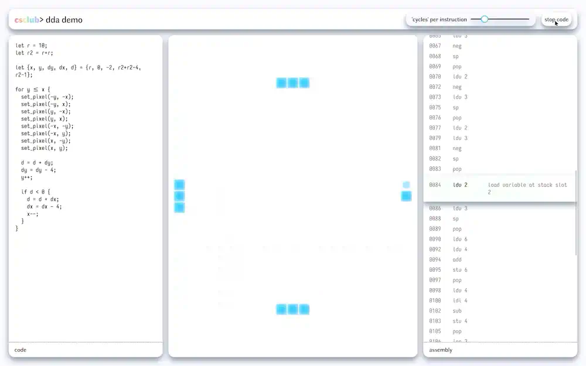
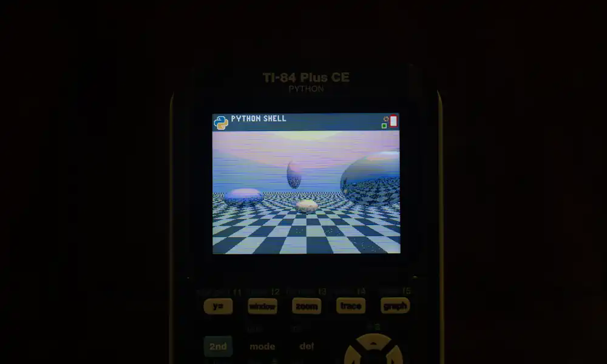

       
<div id="why" class="cnt">
  <div>
    <h1>why do i code?</h1>
    <h2>18 july 2026</h2>
    <separator></separator>
    <h3>read me!</h3>
    <p>this is me on 16-18 july 2026 talking. i have no idea when it&apos;ll become glaringly obvious to me that whatever i&apos;m about to write &lpar;it hasn&apos;t been written yet&rpar; is undoubtedly the most cringe thing i&apos;ve ever written. but i feel like i have some ideas, so i&apos;ll put them down on the page anyways. isn&apos;t that the best any of us can do at any given moment?</p>
    <p>also, all this i&apos;m writing is colored by my present ideas about my past. i am my own unreliable narrator.</p>
    <h3>the easy answer, or the answer i told myself years ago</h3>
    <p>i code to get employed.</p>
    <p>i was a very clueless person when i first started programming for real. the pandemic had just begun, and the already disorienting situation was compounded by my lack of experience as a human being. perhaps it&apos;s obvious that i, being a fat adolescent boy who did not have the first idea about what they&apos;d do in the future, would pretend to be completely sure of myself. i told myself and anyone else who inevitably asked that the only future i had even considered was a well-paying job that could sustain me for forty years.</p>
    <p>ignoring the fact that this is already a super lucky outcome by all means, it sounds pretty boring. i think i thought so at the time too, but i was being ironic. still, everyone has to pay a mortgage, right? and maybe it wasn&apos;t my fault that i ended up making up an answer. no one really knows what they want to do with the rest of their life when they&apos;re twelve years old.</p>
    <h3>&quot;...and then i&apos;ll die&quot;</h3>
    <p>i remember giving this speech to my parents, my friends, my relatives, and whoever asked me why i code.</p>
    <p style="padding-left: 2rem; padding-right: 2rem">&quot;i&apos;m learning to code now, so that when i grow up, i can get a job at microsoft or some other Large Corporation, where i&apos;ll work a modest-to-high-paying job for forty years and then die.&quot;</p>
    <p>doesn&apos;t that sound a little boring? they&apos;d say? maybe there&apos;s something better out there for you. something more fulfiling.</p>
    <p>i guess i just didn&apos;t believe any of them. there wasn&apos;t anything else i could see myself doing in my future. hell, there wasn&apos;t anything i saw in my future. at that point in time, i didn&apos;t even consider my future as a thing that i had to consider. it was just so far away, and it felt like time was crawling along. i thought that after the pandemic ended, i&apos;d be able to compress all the memories and experiences of that time into a little self-contained point in time. it felt like that too; for years it felt like last year was sixth grade, even up until i was entering tenth grade.</p>
    <p>anyways, that was how it was for a good long while. i plopped myself down in front of my computer every day, often for hours on end, typing away, making a virtual world to augment, or maybe supplant, the world i actually inhabited.</p>
    <p>still, i felt a spark, an affinity, for programming, that i just never did for anything else. i had this space, which despite not taking up any physical room, felt more vast and full of possibilities than any space i&apos;d ever encountered &quot;in the real world.&quot;</p>
    <h3>first steps</h3>
    <p>i did a lot of minecraft modding. it&apos;s actually what got me into programming, and, in hindsight, i owe pretty much my entire life trajectory to this time period. so i guess, despite my cynicism, everything did work out in the end.</p>
    <div class="centerer"></img></div>
    <p style="padding-left: 2rem; padding-right: 2rem"><i>above: the minecraft utility mod i made with some friends. we used it to dig our way from the center of the world all the way to the +X and +Z world borders &lpar;that&apos;s 7.5 million blocks in the nether!&rpar;</i></p>
    <p>i also began exploring what i could do in my own standalone programs. here are some first experiments i made with opengl.</p>
    <div class="centerer"></img></div>
    <p style="padding-left: 2rem; padding-right: 2rem"><i>above: a clone of a game we used to be able to play on breaks during this standardized exam we took called the &quot;i-ready&quot;</i></p>
    <div class="centerer"></img></div>
    <p style="padding-left: 2rem; padding-right: 2rem"><i>above: my take on touhou made for my friend david</i></p>
    <p>it&apos;s a lot of me just doing whatever. in the first case, it was literally boring &mdash; boring a hole, that is&nbsp;&mdash; and in the second, it was me just trying to learn some stuff and be cool while doing it. wholesome stuff.</p>
    <p>so, the pandemic came and went. i entered with no idea what i wanted to do do with my life and why i did anything with the time that i had, and i exited not knowing any better. but i did at least find that spark, that affinity.</p>
    <h3>what felt like the final answer</h3>
    <p>my family friends, brother, and i sank a ton of time into this old adobe flash game called &quot;realm of the mad god&quot; when we were younger. i fond memories of playing late into the night at new-years&apos; parties.</p>
    <p>i got hooked on a spinoff of the game called &quot;revenge of the fallen&quot;. unfortunately, it threatened the original so much that the company that ran it filed a dmca takedown request. the developers of my favorite spinoff had no choice but to comply.</p>
    <p style="padding-left: 2rem; padding-right: 2rem"><i>i had a whole youtube channel dedicated to me recording myself getting rare loot in the game, and i was pretty heavily invested in that, too! i will NOT be putting that here, though.</i></p>
    <p>they promised a remake sometime in the future<sup>TM</sup>, but it never came. it still hasn&apos;t, seven years later, and they&apos;ve stopped development.</p>
    <h3>i know how to code, and i know what i want to make. i&apos;ll make it.</h3>
    <p>this is honestly one of the most bittersweet phases of my programming career. with nothing else that i wanted to do and mounting pressure to do more, more, MORE! from my parents and <i>gestures broadly</i>, i started remaking revenge of the fallen with the tools i knew at the time.</p>
    <p>i felt so much like i had a goal. that&apos;s a sentence. but i did! i felt like i had a goal, and i spent nearly every day of mid-2021 to mid-2022 working on the thing, which i dubbed &quot;realm of the sad god&quot;. to date, it is my longest-held project.</p>
    <p>of course i called it sad. looking at the project now, i think it&apos;s incredible that 14-year-old me put so much care and attention into every single detail of this project, but adding self-deprecation to an extreme extent always makes me feel comfortable.</p>
    <p style="padding-left: 2rem; padding-right: 2rem"><i>if i call it sad, then it doesn&apos;t matter if other people think it&apos;s sad or sloppy, it&apos;s all clearly just a joke!</i></p>
    <p>realm of the sad god isn&apos;t sad, though. i&apos;m so proud of the work i put into it now. there&apos;s multiplayer, texture splatting, and shader-based transitions. it feels polished. it really is beautiful, looking back.</p>
    <div class="centerer"></img></div>
    <p style="padding-left: 2rem; padding-right: 2rem"><i>above: a still of realm of the sad god. i still can&apos;t believe i made this in freaking eighth grade!</i></p>
    <h3>trudging along</h3>
    <p>my problem with long-held projects, especially in code &lpar;unfortunately&rpar;, is that i get bored way too easily. or the technical debt piles up and i&apos;m too lazy to clean it up. or i begin spending too much time playing the game, using the product, or mindlessly looking at the result to actually work on it.</p>
    <p>really, it&apos;s a combination of everything, and mounting pressure from my own self to keep working at the project despite my loss of interest. i&apos;ve created this pattern that ends in me never finishing anything, because the pressure to finish the thing begets that very thing&apos;s demise. it just makes everything feel pointless. like, i&apos;ve made this codebase, what i like to think of as a work of art &lpar;i know it&apos;s not, but i can pretend that it is&rpar;, for my own benefit and for my own fun, and yet it feels like a burden upon me. how can such a fun thing feel like a burden?</p>
    <p>it&apos;s like going out sometimes. there&apos;s so much pressure to have a good time, especially when i&apos;m going out with friends that i haven&apos;t seen in a while or am seeing in a new context for the first time, that i just hole myself up in my head. there&apos;s shells upon shells of reasons to be afraid of taking the next step, and so i just don&apos;t. i just give up. i stop typing, or i just dissociate until the night is over.</p>
    <p>i haven&apos;t been able to get past this trudging along feeling since this project. i miss having a piece of code that i know inside and out and that i&apos;ve polished for months. i miss especially working on these projects with friends. being fulfilled is so much work. hell, i&apos;m doing it right now. i feel like i&apos;m failing because i&apos;m just rambling on. and then i feel like i&apos;m failing further because i feel like i should be should be feeling fulfilled but i still feel like i&apos;m failing. terrific! and terrible.</p>
    <h3>little things</h3>
    <p>after realm of the sad god, i began a series of projects, each of which i thought would turn out great, but would ultimately meet the same demise, and in the same way, too.</p>
    <p>i have a goal that requires some technique i don&apos;t yet know &lpar;order-independent transparency, physics simulation, heavy post-processing, skeletal animation, you name it&rpar;.</p>
    <p>i work hard to learn this technique, and i implement it.</p>
    <p>then, my motivation to finish this project and meet this self-imposed goal falls off a cliff. i don&apos;t know why. it&apos;s weird. i guess school kind of trained me to do this?</p>
    <div class="centerer"></img></div>
    <p style="padding-left: 2rem; padding-right: 2rem"><i>above: a ray-casting shader i wrote for fun after i started connecting derivatives with stuff i could do in computer graphics</i></p>
    <div class="centerer"></img></div>
    <p style="padding-left: 2rem; padding-right: 2rem"><i>above: a demo site i built to showcase how the dda (differential digital analyzer) algorithm can make repeated computations faster</i></p>
    <div class="centerer"></img></div>
    <p style="padding-left: 2rem; padding-right: 2rem"><i>above: a raytracer written in python by hand on my friend&apos;s ti-84 calculator</i></p>
    <lite-youtube videoid="FJrT2gbuz0c" title="&nbsp;" class="other-image-old" allow="accelerometer; autoplay; clipboard-write; encrypted-media; gyroscope; picture-in-picture; web-share" referrerpolicy="strict-origin-when-cross-origin" loading="lazy" allowfullscreen=></lite-youtube>
    <p style="padding-left: 2rem; padding-right: 2rem"><i>above: video; a skeletal animation engine i made (literally each bone is a line). i later found out that the feet sliding was caused by setting the position of the knee steady at each time step, rather than the foot. my bad.</i></p>
    <lite-youtube videoid="vXzDkM7uB44" title="&nbsp;" class="other-image-old" allow="accelerometer; autoplay; clipboard-write; encrypted-media; gyroscope; picture-in-picture; web-share" referrerpolicy="strict-origin-when-cross-origin" loading="lazy" allowfullscreen=></lite-youtube>
    <p style="padding-left: 2rem; padding-right: 2rem"><i>above: video; a graphical basic interpreter i wrote to demo basic to the cs club</i></p>
    <lite-youtube videoid="NjJwF9eVuf4" title="&nbsp;" class="other-image-old" allow="accelerometer; autoplay; clipboard-write; encrypted-media; gyroscope; picture-in-picture; web-share" referrerpolicy="strict-origin-when-cross-origin" loading="lazy" allowfullscreen=></lite-youtube>
    <p style="padding-left: 2rem; padding-right: 2rem"><i>above: video; a tennis for two game</i></p>
    <lite-youtube videoid="dSB57gPC_h4" title="&nbsp;" class="other-image-old" allow="accelerometer; autoplay; clipboard-write; encrypted-media; gyroscope; picture-in-picture; web-share" referrerpolicy="strict-origin-when-cross-origin" loading="lazy" allowfullscreen=></lite-youtube>
    <p style="padding-left: 2rem; padding-right: 2rem"><i>above: video; a 3-d version of that i-ready game clone i made</i></p>
    <lite-youtube videoid="1PVASn8OKio" title="&nbsp;" class="other-image-old" allow="accelerometer; autoplay; clipboard-write; encrypted-media; gyroscope; picture-in-picture; web-share" referrerpolicy="strict-origin-when-cross-origin" loading="lazy" allowfullscreen=></lite-youtube>
    <p style="padding-left: 2rem; padding-right: 2rem"><i>above: video; a little hot air balloon thing where you can fly around with some nice dithering and a beautiful color palette that i still use</i></p>
    <h3>me! me! me!</h3>
    <p>i like to think that my ego is in check, and i have for a while. looking back, that&apos;s clearly not the case. frankly, the fact that i still think that it&apos;s somewhat the case is cause for a rethink, now that i&apos;m typing this.</p>
    <p>there was this idea i had, motivated largely by the polarizing character that is jonathan blow, that i must use the lowest-level language possible for any given task. if i&apos;m writing a browser-based graphics-heavy app, it <i>must</i> be in c and webassembly, no matter how ill-suited its ecosystem is. hell, everything must be in c. that was actually my mentality for a while, and i still honestly can&apos;t put that urge past me to use c for everything, even though i know it&apos;ll make me want to bash my head into a wall.</p>
    <p>the feeling that i&apos;m saving the world by programming in c for everything and preserving the knowledge of low-level programming is pretty enticing, but there&apos;s no way in hell that taking things this far could possibly be the best solution. i wish i hadn&apos;t fallen into that rabbit hole; there are a few projects &lpar;some on this blog!&rpar; that have ended prematurely due to how un-expressive c is combined with the whole trudging along feeling i described above.</p>
    <p>i made things difficult for myself, because i feel like that somehow makes me better. it doesn&apos;t, but it felt like it.</p>
    <h3>and now?</h3>
    <p>i&apos;ve had a pretty rough couple of years. correction. i&apos;ve had a pretty rough adolescence. not in the sense that i&apos;ve had familial instability or a lack of food or shelter or anything like that, which i&apos;m grateful for. but in the sense that i&apos;ve just had a pretty rough adolescence.</p>
    <p>my thinking has almost come full circle to part of the mentality i had during the pandemic. i guess i code just to escape. that&apos;s why i kept on making those little programs throughout high school, never &quot;finishing&quot; a single one.</p>
    <p>the goal was never the program itself, but instead to just be in the otherworldly place that is my computer. when i&apos;m programming, i feel absolutely no responsiblity to explain myself to anyone who asks what i&apos;m doing. they just think i&apos;m dialed in, i just want them to go away. we, well i at least, communicate effectively despite the discrepancy in thought. they leave me alone. congratulations michael.</p>
    <h3>reality check.</h3>
    <p>ok wait, that seems like not nuanced enough of an answer. let&apos;s add something else to it.</p>
    <h3>i <b>love</b> my computer?</h3>
    <p>i haven&apos;t yet discussed just how much i love programming. i love typing, i love thinking, i love imagining the electrons whizzing around inside my computer at my command. when i am programming, i am in my computer. i am <i>in</i> it. i finally feel present.</p>
    <p>it&apos;s the only time my thoughts fall away. i stop worrying about whether i&apos;m good enough or not. i stop thinking about whether i should leave this earth early or not. my physical body and the distress i feel with it is no longer a concern, because i&apos;m not in <i>it</i> anymore, i&apos;m in my <i>computer.</i> it turns out that that feels better than constantly worrying anyways.</p>
    <p>i lose track of time. i think about my fingers dancing about on the keyboard so effortlessly, so naturally. i run my program and am reminded that the result is actually one on which humans have collaborated for millenia. i think about how many late nights people around the world have spent working together so that i am able to do what i love doing.</p>
    <p><b>and my faith in humanity begins to heal once more.</b></p>
    <separator></separator><p style="margin-bottom: 0;padding-bottom:0;">that&apos;s the end of this post. thanks for reading!<br/><a href="#intro">back to top &#x2934;</a></p>
  </div>
</div>
